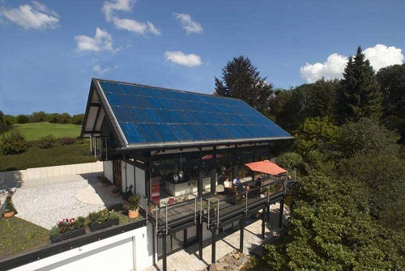
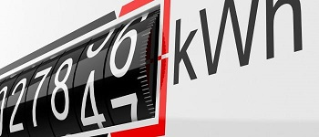
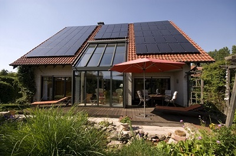
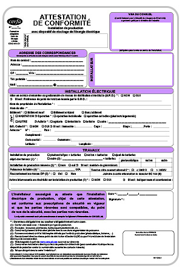

Après une flambée des installations en 2009-2010, la filière de l'électricité photovoltaïque a subi quelques remous... Le moratoire de trois mois (premier trimestre 2011) a finalement débouché sur un nouveau calcul des tarifs d'achats qui ne compromet pas la rentabilité des projets pertinents et bien calculés. Cette pause forcée a d'ailleurs vraisemblablement permis de renforcer la position des installateurs les plus sérieux. Néanmoins, un projet photovoltaïque reste une petite aventure et n'est pas sans écueils. Ce guide se propose de vous donner quelques clés pour prendre les bonnes décisions, affiner vos besoins et vos choix, et discuter (presque) d'égal à égal avec les installateurs. Vous y trouverez également des informations réglementaires et financières afin de dimensionner au mieux votre installation et vous assurer de la rentabilité économique de votre projet.
Avant de se lancer, encore faut-il déterminer avec soin ses besoins et les confronter au champ des possibles (techniques et réglementaires).
Ni les panneaux, ni le bâtiment ne sont connectés au réseau électrique. La production est soit consommée sur place, soit stockée dans des batteries. Ce type de montage permet d'électrifier un bâtiment très éloigné du réseau, mais impose une source alternative (groupe électrogène) en cas d'absence de soleil pendant plusieurs jours en hiver.
Les panneaux alimentent un bâtiment lui-même connecté au réseau, avec ou sans batteries. Un système de bascule automatique permute sur le réseau électrique dès que la puissance produite est insuffisante (délestage de puissance), ou que les batteries sont vides (sélection de source). Cette solution n'injectant pas de courant sur le réseau, se contente d'une électronique simplifiée.
Dans ce cas, dès que la production excède la consommation, le surplus est vendu à un opérateur à un tarif spécial et avantageux (pour le moment), dit « tarif d'achat ». L'installation injecte donc régulièrement du courant vers le réseau. Le courant vendu devant être de bonne qualité, c'est-à-dire respecter des contraintes précises de tension et de régularité même en cas d'ensoleillement irrégulier, il convient d'installer un onduleur de bonne qualité. De plus, la présence d'un échange commercial oblige également à implanter un compteur d'injection pour mesurer avec certitude la quantité d'énergie vendue. Il existe des systèmes « intelligents » visant à maximiser l'autoconsommation, par exemple en chauffant l'eau chaude sanitaire à l'avance, en chargeant des batteries tampons?
C'est le modèle de loin le plus utilisé, car le tarif d'achat est encore largement supérieur au prix du kWh venant du réseau. Cette configuration nécessite deux branchements : > le branchement « production », qui comporte deux compteurs d'énergie posés têtebêche : un pour mesurer l'énergie vendue ; et un « compteur de non-consommation » permettant de contrôler l'absence d'autoconsommation. > le branchement « consommation », qui utilise un compteur standard.
Quelques entreprises se proposent de louer votre toit pour y installer des panneaux et vendre eux-mêmes l'électricité produite. Si cette solution a le mérite de simplifier à l'extrême la participation du propriétaire, elle est évidemment moins rémunératrice. Ajoutons que les toitures de grande surface et situées dans le sud de la France sont les plus recherchées?

Résidence principale, secondaire, bureaux, nombre de personnes, taux d'occupation, puissance des appareils? de multiples critères influencent la consommation d'électricité d'un bâtiment.
Pour les bâtiments existants, l'étude attentive de la facturation passée donne une idée relativement précise de la consommation à l'échelle du trimestre et parfois du mois.
Attention. La consommation annuelle agrégée est rarement d'un grand secours, car les variations au cours de l'année montrent souvent de grandes amplitudes. Il faut donc s'assurer que la saisonnalité de l'ensoleillement correspond à celle de la consommation.
Pour les bâtiments en projet, quelques outils de simulation sont proposés sur le web, notamment par EDF (http://bleuciel.edf.com/mes-projets/jerenove/promodul-740.html). Une démarche indispensable. A titre d'exemple, la consommation annuelle moyenne d'un foyer français de quatre personnes varie de 3 à 6 MWh selon la superficie de la maison, l'âge des enfants, la région, la catégorie socioprofessionnelle, etc. Certains estiment qu'un foyer économe pourrait vraisemblablement se contenter d'un seul MWh par an !
Le type d'installation et son dimensionnement dépendent très étroitement des objectifs du porteur de projet. Mettons de côté les sites isolés pour lesquels la démarche est évidente. Certains rêvent de se désabonner d'EDF par défi. Les plus écolos se moquent de la rentabilité. D'autres visent un retour sur investissement rapide, quitte à y mettre le prix. Les plus raisonnables souhaitent alléger leur facture. Les plus ambitieux la réduire à néant grâce à leur production excédentaire.
l'idéal est sans surprise de faire face au sud. Un écart de quelques dizaines de degrés est acceptable, mais au détriment du rendement qui chute rapidement avec l'incidence des rayons du soleil (70% à 45°, 50% à 30°).
la pente de toit idéale correspond tout simplement à la latitude du lieu (entre 41° au Sud et 51° au Nord). Comme pour l'orientation, un écart est acceptable dans une certaine mesure et aura une influence sur la saisonnalité des performances : un panneau plus vertical produira plus en hiver, et à l'inverse, un panneau moins incliné sera plus efficace en été. S'il est difficile de modifier l'inclinaison des panneaux placés sur une toiture existante, il est utile de l'étudier précisément pour les panneaux posés au sol ou les bâtiments neufs.
pour les mêmes raisons que précédemment, les cellules photovoltaïques produisent moins lorsqu'elles sont souillées. Feuilles mortes, poussières, guano, etc. sont à prendre en compte. Des panneaux sur un bâtiment proche d'une route très fréquentée, ou d'une usine particulièrement sale, devront être nettoyés plusieurs fois par an.
 même si les rendements des cellules progressent d'année en année, il faut tout de même une surface non négligeable pour commencer à produire sérieusement et espérer rentabiliser l'opération. A étudier en fonction du projet. Notons au passage que certaines aides sont réservées aux installations de 3 kW crête maximum, ce qui représente une surface de 20 à 30 m2 à l'heure actuelle.
sans rentrer dans les détails techniques, rappelons que l'ennemi numéro un du panneau photovoltaïque est l'ombre ! En effet, il suffit qu'une seule cellule d'un panneau soit privée de soleil pour que la production de la totalité du panneau s'écroule. L'effet est identique pourles groupes de panneaux montés en série : la production de la série est limitée par le module le moins productif. Il faut donc s'assurer qu'aucun arbre ou bâtiment aux alentours du site ne vienne masquer tout ou partie des panneaux, aussi bien l'hiver que l'été? sans oublier le bâtiment lui-même (cheminée, antenne,...).
. Une Déclaration Préalable aux travaux (DP) est obligatoire pour les bâtiments existants (à effectuer à la mairie du lieu de l'installation).
. Pour les bâtiments neufs, les panneaux doivent être intégrés au Permis de Construire.
. Si la puissance est inférieure à 3 kWc et la hauteur inférieure à 1m80 : aucune déclaration, ni demande ne sont nécessaires (sauf en secteur classé : déclaration préalable).
. Au-delà de 3 kWc, une simple Déclaration Préalable aux travaux (DP) est nécessaire.
Dans tous les cas, l'installation peut être refusée pour des motifs esthétiques dans les zones protégées (monument historique par exemple). Si votre installation est à proximité d'un site classé, la consultation du plan des servitudes, annexe du Plan d'Occupation des Sols (POS) ou du Plan Local d'Urbanisme (PLU), permet de connaître avec précision le périmètre protégé.Elle ne concerne pas les installations en « site isolé », c'est-à-dire non connectées au réseau. En revanche, dès que le bâtiment est relié au réseau, même si la totalité de la production sera autoconsommée, une demande de raccordement est nécessaire. La demande s'effectue auprès d'ERDF, plus précisément au service ARD (Agence Régionale de Distribution) de la région concernée (http://www.erdfdistribution.fr/Producteurs). Cette procédure est plus ou moins longue en fonction de la puissance de l'installation. Pour une puissance apparente (toujours inférieure à la puissance crête, voir chapitre « un peu de technique ») inférieure à 6 KVA, elle est très rapide et peu onéreuse. Au-delà, la puissance n'étant pas négligeable au regard du réseau, des études et/ou des modifications techniques sur ce dernier peuvent être diligentées? à la charge du producteur (donc vous !).
. L'autorisation d'installation (déclaration préalable, permis de construire, certificat de non opposition?).
. Des informations techniques sur le matériel prévu.
. Et pour les grandes installations (supérieures à 9 kWc) : apporter la preuve des moyens financiers suffisants pour mener à bien l'opération.
Le raccordement n'est réalisé effectivement qu'après la délivrance d'une attestation de conformité visée par le Consuel (Comité national pour la sécurité des usagers de l'électricité, organisme de contrôle accrédité).Il est conclu avec EDF à qui ERDF aura transmis votre dossier. Ce contrat court à partir de la date de demande de raccordement au réseau (qui détermine également le tarif d'achat) et pour une durée de 20 ans.
Un site web mis en place par EDF permet de suivre l'avancement du contrat et sa gestion : http://www.edf-oasolaire.fr/login.action.
La contraction d'une assurance responsabilité civile est indispensable et obligatoire, afin de vous couvrir contre d'éventuels sinistres causés à des biens ou des personnes : électrocution, chute d'un panneau... Elle peut être ajoutée gracieusement à la multirisque du bâtiment pour les petites installations. Attention, certains assureurs refusent purement et simplement d'assurer ce risque à ce jour, ouvrant la voie à des courtiers spécialisés qui ont déjà commencé à se positionner sur ce secteur.
. Les dommages aux panneaux et au système (incendie, bris de glace, inondation...) peuvent être intégrés dans la police d'assurance existante du bâtiment pour les petites installations. Les plus grands projets devant contracter une assurance spécifique (ou payer une surprime).
. La perte d'exploitation est proposée par quelques compagnies. Elle compense les revenus non perçus à la suite d'un sinistre ou d'une panne. Son prix dépend de la valeur de production assurée (entre 10 et 15 euros par an pour 1000 euros de production assurée).